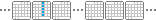
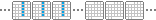
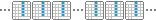
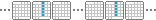
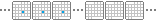
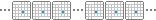
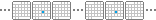

Für eintägige Ereignisse können folgende Regelmäßigkeiten eingestellt werden. Prinzipiell gilt, dass die Regelmäßigkeit auf das Datum bezogen wird, auf das geklickt wurde, um das Ereignis einzustellen. Das geklickte Datum muss also schon ein Teil in der Serie sein. Soll bspw. ein Geburtstag am 15.8. eingestellt werden, so muss ein neues Ereignis an einem 15.8. (egal welches Jahr) angelegt werden und in den Ereignis-Optionen muss die Regelmäßigkeit entsprechend eingestellt werden.
Einzelne Tage können als Ausnahme von der Regelmäßigkeit angegeben werden. Mehr dazu unten.
»nach Datum:
Die Regelmäßigkeit bezieht sich auf das ausgewählte Datum (Nummer des Tages/Monats). Die Kombination aus wöchentlichem, monatlichem und jährlichem Auftreten ergibt folgende Möglichkeiten:
- wöchentlich: Das Ereignis erscheint jede Woche, aber nur in DIESEM EINEN Monat (also insgesamt nur 4 bis 5 Mal).

- wöchentlich + monatlich: Das Ereignis erscheint jede Woche aber nur in DIESEM Jahr (also insgesamt 52/53 Mal).

- wöchentlich + monatlich + jährlich: Das Ereignis erscheint jede Woche (unbegrenzt).

- wöchentlich + jährlich: Das Ereignis erscheint jedes Jahr in DIESEM Monat jede Woche (unbegrenzt).

- monatlich: Das Ereignis erscheint jeden Monat aber nur in DIESEM Jahr (also insgesamt 12 Mal).

- monatlich + jährlich: Das Ereignis erscheint jeden Monat zum ausgewählten Tag (unbegrenzt). Diese Einstellung eignet sich für monatliche Ereignisse wie z.B. fällige Mietzahlung oder Gehaltsüberweisung.

- jährlich: Das Ereignis erscheint jedes Jahr zum ausgewählten Datum (unbegrenzt). Diese Einstellung eignet sich für jährliche Ereignisse wie z.B. Geburtstage.

Bei monatlichen Regelmäßigkeiten ist zu beachten, dass die Monate unterschiedliche Anzahl von Tagen haben. Wird bspw. der 31. Januar ausgewählt, so kann das Ereignis bei monatlicher Regelmäßigkeit nur jeden 2. Monat auftauchen.
»nach Wochentag im Monat:
Dies ist eine monatliche Regelmäßigkeit. Im Gegensatz zur Auswahl 'nach Datum' bezieht sich die Serie jedoch nicht auf die Nummer des ausgewählten Tages, sondern auf den Abstand des ausgewählten Tages zum Monatsbeginn. Damit sind Regelmäßigkeiten wie z.B. 'jeder erste Dienstag im Monat' möglich. Befindet sich der ausgewählte Tag in der letzten Woche eines Monats, so sind Regelmäßigkeiten wie 'jeder letzte Freitag im Monat' möglich.
»nach Abstand:
Auf Basis des ausgewählten Tages kann eine Regelmäßigkeit nach einem beliebigen Abstand eingestellt werden (z.B. aller 3 Tage). Einige Gemeinsamkeiten und Unterschiede zur Auswahl 'nach Datum' seien hier aufgezählt:
- der Abstand 7 Tage ist gleichbedeutend mit der Auswahl 'nach Datum': wöchtentlich + monatlich + jährlich
- der Abstand 1 Monat ist gleichbedeutend mit der Auswahl 'nach Datum': monatlich + jährlich
- der Abstand 1 Jahr ist gleichbedeutend mit der Auswahl 'nach Datum': jährlich
- der Abstand 12 Monate ist gleichbedeutend mit der Auswahl 'nach Datum': jährlich
- der Abstand 365 Tage ist NICHT gleichbedeutend mit der Auswahl 'nach Datum': jährlich, denn Schaltjahre haben weniger Tage
»nach Monatsende:
Dies ist eine monatliche Regelmäßigkeit, die sich auf den Abstand des ausgewählten Tages zum Monatsende bezieht (z.B. 3 Tage vor Ende des Monats).
»Ausnahmen:
Im (erweiterten) Dialogfenster zum Bearbeiten eines Ereignisses lassen sich Ausnahmen von der Regelmäßigkeit anzeigen und bearbeiten. Das sind Tage, an denen das Ereignis trotz der Regelmäßigkeit nicht stattfindet. Alternativ lässt sich eine Ausnahme definieren, indem am jeweiligen Tag das Ereignis gelöscht wird, mit der Option 'nur dieses Datum'. Ist ein Datum, das als Ausnahme definiert wurde veraltet, so wird es nach 30 Tagen aus der Liste der Ausnahmen entfernt. Damit wird verhindert, dass die Liste der Ausnahmen über die Zeit immer größer wird.